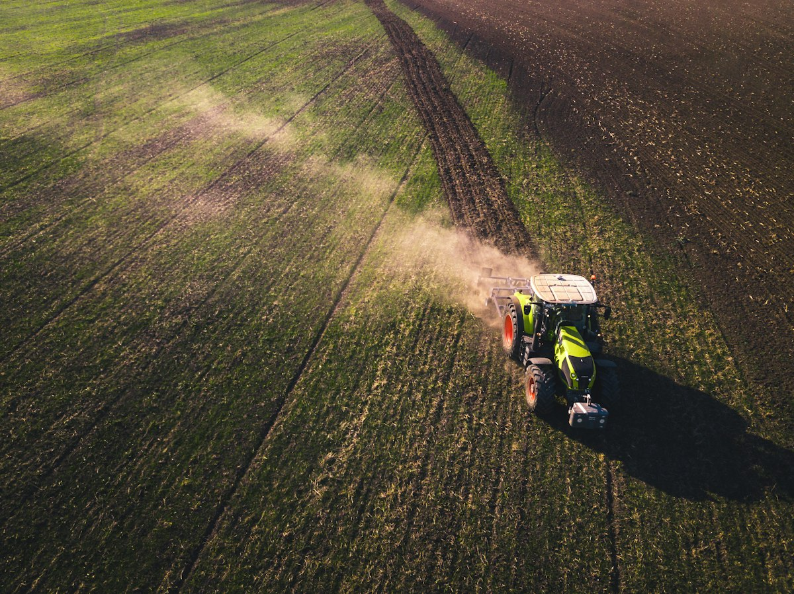
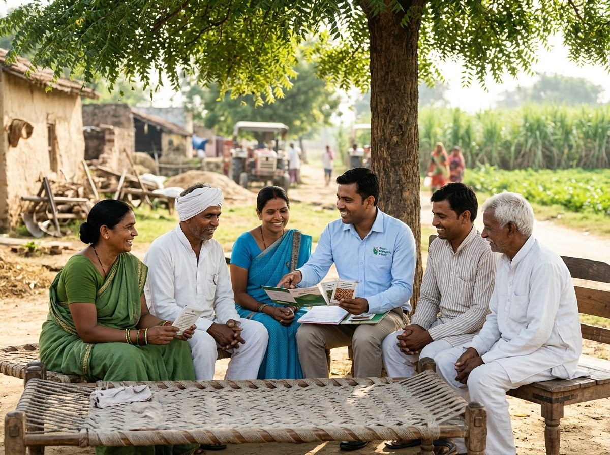
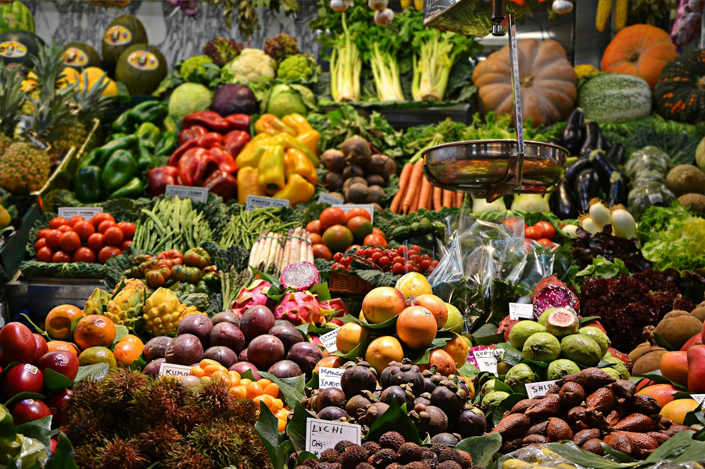
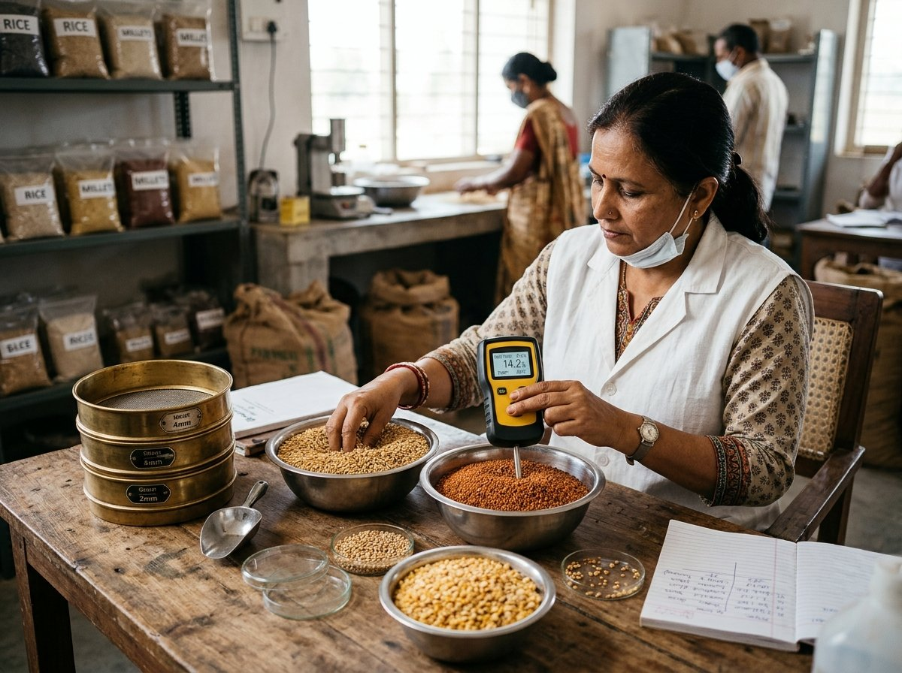
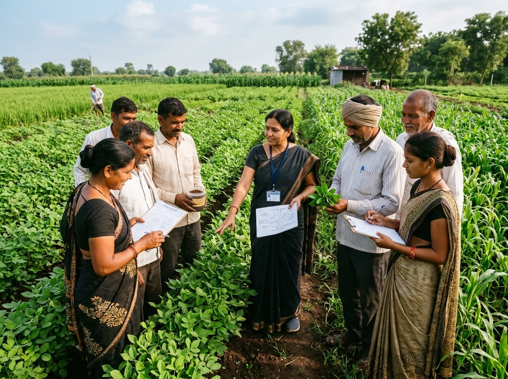
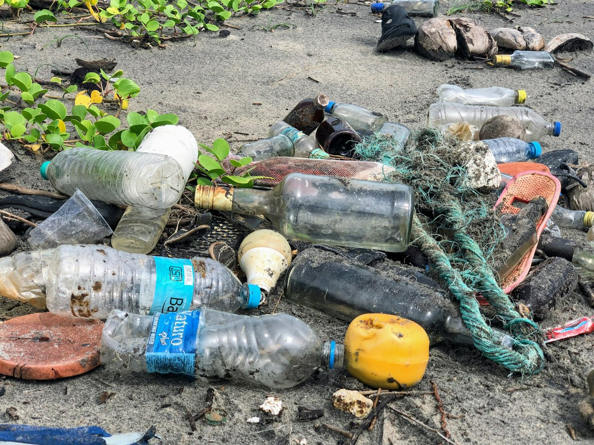
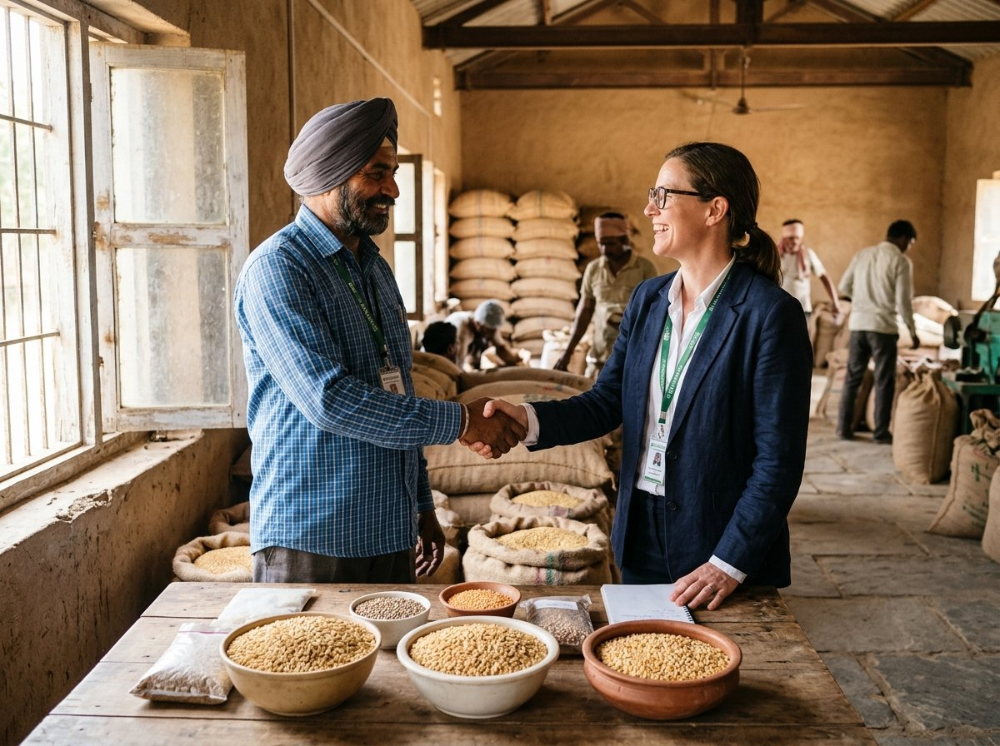
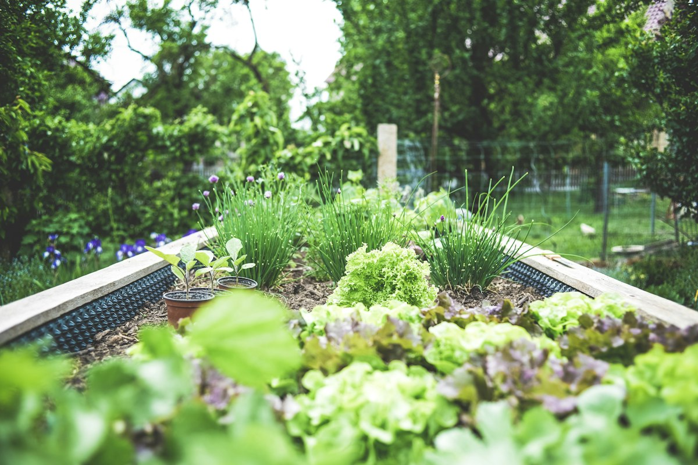

Farm-Gate Collection
Scheduled village-level procurement with certified digital scales, instant electronic weigh receipts, and prompt bank settlements.
Explore ServiceFrom door-to-door farm collection to certified laboratory testing and institutional supply chains, we provide a complete agricultural ecosystem.
Every service is tailored to dismantle market friction, eliminate middlemen markups, and provide institutional reliability to both smallholder growers and commercial food enterprises.

Scheduled village-level procurement with certified digital scales, instant electronic weigh receipts, and prompt bank settlements.
Explore Service
Seamless shareholder onboarding, agricultural documentation, cooperative voting rights, and seasonal patronage bonus distribution.
Explore Service
Direct institutional channels connecting farmer groups with modern trade, organic grocery chains, bulk processors, and food exporters.
Explore ServiceMulti-ton supply contracts for paddy, millets, pulses, and spices with batch traceability, customized packing, and assured dispatch cycles.
Explore Service
On-site digital moisture analysis, foreign matter screening, grain length grading, and certified pesticide residue testing protocols.
Explore Service
Experiential farmer field schools on natural pest management, biological inputs, drip irrigation efficiency, and climate-resilient cropping.
Explore Service
Food-grade vacuum packaging, retail packaging with bilingual nutritional labels, nitrogen flushing, and temperature-monitored fleet delivery.
Explore Service
Structured contract farming agreements, forward procurement tie-ups, volume discounts, and verified vendor onboarding for institutional clients.
Explore ServiceWe take procurement to the farmer’s doorstep, eliminating exorbitant transport costs, dubious weighing middlemen, and distressed selling.
Village field animators coordinate harvest calendars 3 days in advance, dispatching mobile procurement teams equipped with GPS tracking.
Produce is weighed on calibrated electronic scales in full view of the grower. Instant moisture readings determine the transparent grade multiplier.
Each bag is tagged with an encrypted QR code recording farmer ID, village code, moisture %, and net weight. An instant SMS receipt is issued.
Funds are transferred directly into the member’s verified Aadhaar-linked bank account without commissions or unauthorized cuts.

We maintain an on-site quality assurance testing lab certified by regional agricultural universities, ensuring that every consignment meets strict commercial purity metrics.
Precise NIR moisture meters ensure grains stay within 12–14% target limits to prevent mold infestation and milling breakage.
Randomized multiresidue pesticide assays guarantee compliance with FSSAI standards and APEDA organic export requirements.
Every wholesale bag carries an individualized lot number traceable to the exact village cluster, grower cluster, and harvest date.
Every commercial shipment includes an official Certificate of Analysis verifying purity, germ count, and grade consistency.
Higher yields and premium grades begin in the field. Our agronomists conduct year-round field clinics, soil health mapping, and sustainable input manufacturing workshops.
Training smallholders in producing on-farm organic inputs like Jeevamrit, Panchagavya, and neem extract to slash external chemical costs by 40%.
Empowering growers with solar-powered drip irrigation setups, tensiometer soil sensors, and ridge-and-furrow water management techniques.
Practical methods in tarpaulin sun-drying, hermetic storage bag usage, and moisture meters that prevent post-harvest spoilage and insect damage.
How GreenRoots cooperative services replace traditional middleman inefficiencies with certified digital transparency and measurable financial returns.
| Agricultural Support Service | Traditional Middleman Model | GreenRoots FPC Cooperative Model | Direct Grower Impact |
|---|---|---|---|
| Farm-Gate Weighing & Collection | Manual spring scales; 2–5 kg cut per bag as 'handling deduction' | Calibrated Digital Telemetry; zero weight cuts | +6% immediate volume saving on harvest weighment |
| Agricultural Inputs & Seeds | High retail markups, bundled credit, uncertified seed lots | Bulk Subsidized Procurement; certified seed germplasm | 20% to 30% reduction in upfront seasonal input expenses |
| Soil Health & Crop Advisory | Commercial chemical dealer recommendations pushing synthetic inputs | Free On-Farm N-P-K Diagnostics; natural bio-input clinics | 40% reduction in synthetic fertilizers; improved soil carbon |
| Payment & Trade Settlement | Delayed payments (30 to 90 days), arbitrary interest deductions | 100% Cashless DBT Bank Transfer within 24–48 hours | Zero debt interest stress; predictable working capital |
| Farm Machinery & Mechanization | Exorbitant private rental rates during peak harvest crunch | Subsidized Custom Hiring Centers (tractors, drones, harvesters) | 35% mechanization savings; zero harvest delay losses |
Partner with GreenRoots Producer Company for transparent, single-origin procurement, guaranteed purity standards, and reliable year-round delivery schedules.